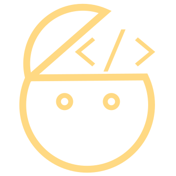

<mat-toolbar class="bar" color="primary">
  <button mat-icon-button disabled>
    
  </button>
  <span class="title">UXersCode</span>
  <span class="spacer"></span>
  <button mat-icon-button class="icon" aria-label="contact us" (click)="mail()">
    <span class="mdi mdi-email"></span>
  </button>
  <button mat-icon-button class="icon" aria-label="Twitter" (click)="twitter()">
    <span class="mdi mdi-twitter"></span>
  </button>
  <button mat-icon-button class="icon" aria-label="Github" (click)="github()">
    <span class="mdi mdi-github"></span>
  </button>
</mat-toolbar>
